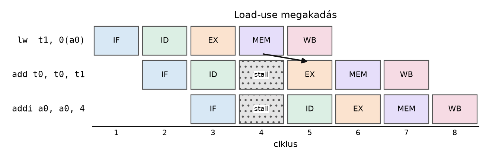
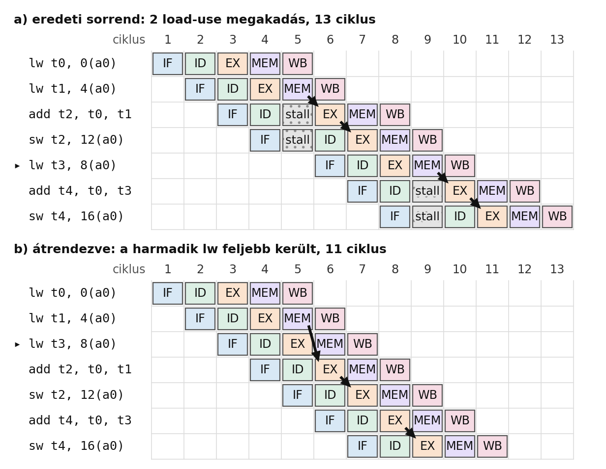

Futtassuk le a sum kernelt 64 elemű tömbön az
ötszakaszos futószalag modelljén. A nyom 333 utasítás, és az eredmény
erősen függ attól, hogyan kezeli a gép az egymástól függő
utasításokat:
| Változat | Ciklus | CPI |
|---|---|---|
| az eredmény csak a regiszterfájlon át adható tovább | 725 | 2,18 |
| továbbítás a szakaszregiszterekből | 531 | 1,59 |
| továbbítás, és a ciklusmag két utasítása felcserélve | 467 | 1,40 |
Ugyanaz a program, ugyanaz az órajel, mégis több mint másfélszeres a különbség a két szélső sor között. Az A futószalag elve: átbocsátás és késleltetés alfejezetben független utasításokkal dolgoztunk; a valódi programokban viszont a következő utasítás gyakran éppen az előző eredményét várja. Az ilyen helyzet az adathazárd (data hazard). Ebben az alfejezetben megtanulod megtalálni, hardverrel feloldani, ahol lehet, és fordítói átrendezéssel elkerülni, ahol a hardver nem segíthet.
Nézzük az add t0, a0, a1 és az utána álló
sub t1, t0, a2 párost. Az add összege az EX
szakasz végén, a 3. ciklusban már létezik, de a t0
regiszterbe csak a WB-ben, az 5. ciklusban kerül. A sub a
3. ciklusban olvasná a regiszterfájlt: ott még a régi érték van. Két
lehetőség van:
sub az ID-ben vesztegel, amíg
az add el nem ér a WB-be (stall);Az ábrán az a) rész a várakozást, a b) rész a továbbítást mutatja.
Figyeld meg, hogy forwardinggal az add-ból két fekete nyíl
indul: a sub az EX/MEM, az and a MEM/WB
regiszterből kapja a t0 értékét, az or pedig
már a regiszterfájlból olvassa.
Definíció. Két utasítás között RAW-függőség (read after write, valódi adatfüggőség) van, ha a későbbi olvas egy regisztert, amelyet a korábbi ír, és közben senki más nem írta felül. Hazárd akkor lesz belőle, ha a futószalagban az olvasás megelőzné az írást.
A regiszterfájlt szokás úgy tervezni, hogy a ciklus első felében ír, a második felében olvas. Ekkor ha a termelő a WB-ben van, ugyanabban a ciklusban az ID-ben álló fogyasztó már az új értéket olvassa. Legyen a két utasítás programbeli távolsága (: közvetlenül egymás után). Ha a termelő az . ciklusban indul, a WB-je az . ciklus; a fogyasztó ID-je zavartalanul az . ciklusban volna. Várakozás nélkül akkor jó, ha , ezért forwarding nélkül a szükséges megakadások száma
Vagyis esetén 2, esetén 1, esetén nincs megakadás (ha közben más ok nem tolja hátrébb a fogyasztót).
A WAR (write after read) és WAW (write after write) név szerinti függőségek ebben a sorrendi futószalagban nem okoznak hazárdot, mert minden utasítás sorban olvas az ID-ben és sorban ír a WB-ben; ezek az ILP, függőségek és statikus ütemezés alfejezettől válnak fontossá.
A továbbításhoz az ALU mindkét bemenete elé egy három bemenetű multiplexert teszünk: a regiszterérték (ID/EX-ből), az EX/MEM regiszter ALU-eredménye vagy a MEM/WB regiszterből visszaírandó érték. A forwarding-egység minden ciklusban az EX-ben álló utasítás forrásregiszter-számait veti össze az előtte haladók célregiszterével. Az első operandusra:
Az , és index azt jelöli, hogy a mező az ID/EX, EX/MEM, illetve MEM/WB regiszterből jön. A ForwardB ugyanez -vel. A képlet három feltételt mond ki, és mindegyik kihagyása más hibát okoz:
sw és az elágazás nem ír
regisztert, ezeknek a rd bitjei mást jelentenek (a
közvetlen érték részét);addi x0, x0, 5 eredményét
nem szabad továbbítani, mert x0 mindig nulla;add t0, a0, a1, addi t0, t0, 1,
sub t2, t0, a3 sorozatban a sub az EX-ben van,
mindkét korábbi utasítás célja t0. A helyes érték a
fiatalabbé, tehát az EX/MEM ágat vizsgáljuk először.A távolság és a forrás kapcsolata egy mondatban: az EX/MEM, a MEM/WB regiszterből, a regiszterfájlból kapja az értéket. Az ALU-utasítások közti RAW-függőség tehát forwardinggal soha nem okoz megakadást.
A betöltés kivétel. A lw t1, 0(a0) értéke csak a
MEM szakasz végén érkezik meg az adatmemóriából, a
közvetlenül utána álló add t0, t0, t1 EX-e viszont
ugyanabban a ciklusban kezdődne. Ezt egyetlen vezeték
sem oldhatja meg: az érték az adott pillanatban még nem létezik. A
megoldás egy ciklus várakozás, utána a MEM/WB-ből továbbítunk:

A diagramon a 4. ciklusban az add nem lép az EX-be
(s), és a mögötte álló addi is az IF-ben
marad. Az üresen maradt EX-hely a buborék (bubble),
amely nem csinál semmit, és végighalad a MEM-en és a WB-n.
Definíció. A hazárdészlelő egység (hazard detection unit) az ID-ben álló utasítást hasonlítja az EX-ben lévőhöz:
Itt
azt jelzi, hogy az ID/EX regiszterben betöltés van (a vezérlésben a
visszaírandó értéket a memóriából választó ResultSrc),
és
pedig az ID-ben dekódolt forrásregiszterek. Ha a feltétel igaz, egy
ciklusig három dolog történik:
Finomság: az I-típusú utasításoknak nincs rs2 mezőjük, a
helyén a közvetlen érték bitjei állnak. Ha az egység ezeket is
összeveti, néha fölöslegesen megállítja a gépet. A pontos egység csak a
ténylegesen használt forrásokat nézi.
A mi egyszerű modellünkben a sw tárolandó értéke is az
EX-ben kell, ezért a lw t0, …, sw t0, … pár is
egy ciklust veszít. Egyes megvalósítások egy MEM → MEM továbbító úttal
ezt is megszüntetik (6. feladat).
A szorzás gyakran több EX-ciklust igényel. Ha a mul
három ciklusig foglalja az EX-et, a mögötte álló utasítások várnak,
akkor is, ha függetlenek tőle, mert a sorrendi
futószalagban nem előzhetik meg. Ez nem adathazárd, hanem
szerkezeti hazárd (structural hazard): a hardverelem
foglalt. A valódi processzorok szorzója rendszerint maga is
futószalagos, és a független utasítások más egységen haladhatnak; ennek
általános megoldása az A Tomasulo-algoritmus
sorrenden kívüli végrehajtása.
A load-use megakadás eltűnik, ha a betöltés és a használata közé egy független utasítás kerül. Ezt a fordító (vagy az assemblyt író ember) átrendezéssel éri el; ez a statikus utasításütemezés (static instruction scheduling). Egy utasítást csak akkor szabad feljebb vinni, ha az átlépett utasítások egyikével sincs
lw nem léphet át egy olyan sw-n, amely
ugyanarra a címre írhat, és egy sw sem olyan hozzáférésen,
amely ugyanazt a címet érintheti.Az ábra ugyanazt a hét utasítást mutatja két sorrendben. Figyeld meg,
hogy a b) részben a harmadik lw feljebb került, mindkét
s cella eltűnt, és a futás 13 helyett 11 ciklus.

Továbbvitt eredmény. A statikus ütemezés mintája: keress független utasítást (RAW, WAR, WAW és memóriasorrend nélkül), és tedd a hosszú késleltetésű művelet (itt a betöltés) és a használata közé. Ezt az ILP, függőségek és statikus ütemezés általánosítja ciklusgörgetéssel, a VLIW és EPIC: a fordítóra bízott párhuzamosság pedig a fordítóra építő géptervezéssel.
A megakadások hatása a CPI-re egyszerűen számolható. Ha az utasítások hányada betöltés, és a betöltések hányada után közvetlenül a használat következik, akkor (a feltöltést elhanyagolva)
A képlet szerint a load-use veszteség a betöltések gyakoriságával és a „rosszul ütemezett” hányadukkal arányos.
Továbbvitt eredmény. A forwarding feltétele: forrásegyezés egy író (RegWrite, ) utasítással, az EX/MEM elsőbbségével a MEM/WB előtt; a load-use hazárd feltétele , ára egy buborék. Ezekre épül a Pipeline-szimulátor és mélyebb futószalagok időzítési modellje, az ILP, függőségek és statikus ütemezés függőségi elemzése és az A Tomasulo-algoritmus eredményszórása.
A sorozat (a
,
számítás tipikus fordítása): lw t0, 0(a0),
lw t1, 4(a0), add t2, t0, t1,
sw t2, 12(a0), lw t3, 8(a0),
add t4, t0, t3, sw t4, 16(a0).
1. lépés: függőségek. Soronként megnézzük minden
olvasott regiszter legutóbbi íróját és a
távolságot (az a0-t senki nem írja a sorozatban).
| # | Utasítás | Forrás ← író () | Forwarding forrás |
|---|---|---|---|
| 3 | add t2, t0, t1 |
t0 ← 1. (2), t1 ← 2. (1) |
t0: regiszterfájl; t1: MEM/WB, 1 stall
után |
| 4 | sw t2, 12(a0) |
t2 ← 3. (1) |
EX/MEM |
| 6 | add t4, t0, t3 |
t0 ← 1. (5), t3 ← 5. (1) |
t0: regiszterfájl; t3: MEM/WB, 1 stall
után |
| 7 | sw t4, 16(a0) |
t4 ← 6. (1) |
EX/MEM |
A 3. sorban a t0-ra a
„:
MEM/WB” szabály azért nem érvényes, mert az add a
t1 miatt egy ciklussal később ér az EX-be, és addigra a
t0 termelője már végzett: a megakadás megnövelte a
tényleges távolságot.
2. lépés: forwarding nélkül a
szabály egyenként: a 3. utasítás 2 ciklust vár (a t1
miatt), emiatt a mögötte állók is csúsznak. A teljes futás szimulátorral
19 ciklus, 8 elveszett ciklussal.
3. lépés: forwardinggal csak a két load-use megakadás marad: , a CPI . A feltöltés nélküli CPI .
4. lépés: átrendezés. A lw t3, 8(a0) az
a0-t olvassa, a t3-at írja; az
add t2 és a sw t2 egyikét sem érinti a
t3. A memóriasorrend is rendben: a
sw t2, 12(a0) a 12-es, a lw a 8-as eltolást
használja, tehát nem ugyanaz a szó. Ha feljebb visszük a 3. helyre,
mindkét add forrásai kész állapotban érkeznek:
.
Először a kézi példa futtatása a szimulátorral, mindkét sorrendben és forwarding nélkül is.
import sys; sys.path.insert(0, "code")
from archkit import pipeline, riscv
eredeti = """lw t0, 0(a0)
lw t1, 4(a0)
add t2, t0, t1
sw t2, 12(a0)
lw t3, 8(a0)
add t4, t0, t3
sw t4, 16(a0)"""
sorok = eredeti.split("\n")
atrendezett = "\n".join(sorok[i] for i in (0, 1, 4, 2, 3, 5, 6))
for nev, kod in (("eredeti", eredeti), ("átrendezett", atrendezett)):
for fwd in (False, True):
r = pipeline.simulate(riscv.static_trace(kod), forwarding=fwd)
stall = {k: v for k, v in r.stalls.items() if v}
print(f"{nev:<12} forwarding={fwd!s:<5} ciklus={r.cycles:>2} megakadás={stall}")
r = pipeline.simulate(riscv.static_trace(eredeti))
for a in r.arrows:
print(f"{r.rows[a.src_row].text:<15} -> {r.rows[a.dst_row].text:<15} "
f"{riscv.REG_NAMES[a.reg]} ({a.path}, {a.dst_cycle}. ciklus)")eredeti forwarding=False ciklus=19 megakadás={'RAW': 8}
eredeti forwarding=True ciklus=13 megakadás={'load-use': 2}
átrendezett forwarding=False ciklus=16 megakadás={'RAW': 5}
átrendezett forwarding=True ciklus=11 megakadás={}
lw t1, 4(a0) -> add t2, t0, t1 t1 (MEM/WB, 6. ciklus)
add t2, t0, t1 -> sw t2, 12(a0) t2 (EX/MEM, 7. ciklus)
lw t3, 8(a0) -> add t4, t0, t3 t3 (MEM/WB, 10. ciklus)
add t4, t0, t3 -> sw t4, 16(a0) t4 (EX/MEM, 11. ciklus)A két hazárdegység döntése a modulban önálló függvény is:
forward_select és load_use_stall. Nézzük meg a
kettős írás esetét és a pontos load-use feltételt:
a, b, c = riscv.static_trace("add t0, a0, a1\naddi t0, t0, 1\nsub t2, t0, a3")
print("sub rs1 forrása:", pipeline.forward_select(c.rs1, ex_mem=b, mem_wb=a))
lw, imm_op = riscv.static_trace("lw t3, 0(a0)\naddi t4, a1, 28")
print("rs2 mező a bitekben:", riscv.encode("addi", rd=29, rs1=11, imm=28) >> 20 & 31)
print("kell-e stall:", pipeline.load_use_stall(imm_op, lw))sub rs1 forrása: EX/MEM
rs2 mező a bitekben: 28
kell-e stall: FalseAz addi t4, a1, 28 bitjeiben az rs2 helyén
éppen 28 áll, ami a t3 regiszter száma. A pontos egység
mégsem akad meg, mert az addi nem olvas rs2-t.
Végül a motivációs táblázat:
adat = list(range(1, 65))
sum_kod = riscv.sum_src(adat)
sum_utem = sum_kod.replace(
" add t0, t0, t1\n addi a0, a0, 4\n",
" addi a0, a0, 4\n add t0, t0, t1\n")
for nev, src, fwd in (("forwarding nélkül", sum_kod, False), ("forwarding", sum_kod, True),
("forwarding + csere", sum_utem, True)):
m = riscv.run(src)
r = pipeline.simulate(m.trace, forwarding=fwd)
print(f"{nev:<19} s0={m.reg('s0')} {r.cycles} ciklus CPI={r.cpi:.2f}")forwarding nélkül s0=2080 725 ciklus CPI=2.18
forwarding s0=2080 531 ciklus CPI=1.59
forwarding + csere s0=2080 467 ciklus CPI=1.40A csere az add-ot és az addi a0-t érinti;
ezek nem függnek egymástól, ezért az eredmény
()
változatlan, a 64 load-use megakadás viszont eltűnt.
sub a t0 értékét, és melyik utasítás várakozik
load-use miatt. (A sub az EX/MEM-ből; csak az utolsó
sw veszít egy ciklust.)add t1, a2, a3 is?rd = x0 esetet is továbbítja. Javítás: az
összehasonlításba vedd be az
feltételt.sw
kétszer ír. Ok: a buborék vezérlőjeleit nem nulláztad,
csak a PC-t és az IF/ID-t fagyasztottad be. Javítás: az
ID/EX-be RegWrite = 0 és MemWrite = 0 kerüljön.mul utáni, tőle
független add mennyit vár, és mi ennek az oka?sub s1, a0, a1;
and s2, s1, a2; or s3, a3, s1;
add s4, s1, s1; sw s4, 0(s1).lw t0, 0(a0); addi t1, t0, 1;
sw t1, 0(a1); lw t2, 4(a0);
addi t3, t2, 1; sw t3, 4(a1). Feltételezheted,
hogy az a0 és az a1 körüli memóriaterület nem
fedi egymást.archkit.pipeline eredményével.memcpy-szerű sorozat:
lw t0, 0(a0); sw t0, 0(a1);
lw t1, 4(a0); sw t1, 4(a1). Milyen feltétellel
továbbíthatna a hardver a MEM/WB-ből a MEM szakaszba, hány ciklust
nyerne ez itt, és milyen átrendezés éri el ugyanezt a meglévő
hardverrel?Adathazárd akkor keletkezik, ha egy utasítás olyan regisztert olvas, amelyet egy előtte haladó még nem írt be (RAW). Forwarding nélkül, az első félciklusban író regiszterfájllal a megakadások száma a távolságra. A forwarding-egység az EX operandusát az EX/MEM vagy a MEM/WB regiszterből veszi, ha egy író utasítás célja egyezik; az EX/MEM elsőbbséget élvez. A betöltés értéke csak a MEM végén készül el, ezért a közvetlen használat egy buborékot kíván; a hazárdészlelő egység (, , egyező vagy ) befagyasztja a PC-t és az IF/ID-t, és nullázza az ID/EX vezérlését. A fordító statikus ütemezéssel, független utasítás beszúrásával kerüli el a veszteséget; több ciklusú műveletnél szerkezeti hazárd is fellép.
mul három ciklusáig foglalt
(szerkezeti hazárd), és sorrendi gépen nem előzhet.s1 író mindenhol az 1. utasítás: a 2. utasítás
(EX/MEM), a 3.
(MEM/WB), a 4.
(regiszterfájl, mindkét operandusra), az 5. utasítás s1-et
távolságból (regiszterfájl), s4-et
-ből
(EX/MEM, a sw tárolandó értékeként) kapja.s1 már megvan; az 5. utasítás a s4 miatt
()
újabb 2 ciklust veszít. Összesen 4 megakadás,
ciklus.lw t0, 0(a0);
lw t2, 4(a0); addi t1, t0, 1;
addi t3, t2, 1; sw t1, 0(a1);
sw t3, 4(a1). A lw t2 átlépte az
addi t1-et és a sw t1-et: regiszterfüggőség
nincs, és mivel a két memóriaterület nem fed át, a sw és a
lw sorrendje nem számít. Eredetileg 2 megakadás (12
ciklus), utána 0 (10 ciklus).static_trace címei egymást követik; egy átkevert nyomlistát
a szimulátor megszakításnak látna):import random
def load_use_szam(tr):
return sum(pipeline.load_use_stall(tr[i + 1], tr[i]) for i in range(len(tr) - 1))
rng = random.Random(30)
def utasitas():
r = lambda: f"t{rng.randrange(3)}"
return rng.choice([f"lw {r()}, 0(a0)", f"add {r()}, {r()}, {r()}",
f"sw {r()}, 4(a0)", f"addi {r()}, {r()}, 1"])
egyezik = 0
for _ in range(200):
tr = riscv.static_trace("\n".join(utasitas() for _ in range(12)))
egyezik += load_use_szam(tr) == pipeline.simulate(tr).stalls["load-use"]
print(f"egyező sorozat: {egyezik}/200")
negy = ["lw t0, 0(a0)", "addi t1, t0, 1", "sw t1, 0(a1)",
"lw t2, 4(a0)", "addi t3, t2, 1", "sw t3, 4(a1)"]
jo = [negy[i] for i in (0, 3, 1, 4, 2, 5)]
ciklus = [pipeline.simulate(riscv.static_trace("\n".join(k))).cycles for k in (negy, jo)]
print(f"4. feladat: {ciklus[0]} -> {ciklus[1]} ciklus")egyező sorozat: 200/200
4. feladat: 12 -> 10 ciklussw tárolandó értéke miatt ne akadjon meg (ha a betöltött
érték a sw címregisztere, a megakadás továbbra is kell). A
meglévő hardverrel átrendezés: lw t0; lw t1;
sw t0; sw t1, ha az a1 területe
nem fedi az a0-ét; ekkor mindkét használat
,
a futás 8 ciklus.